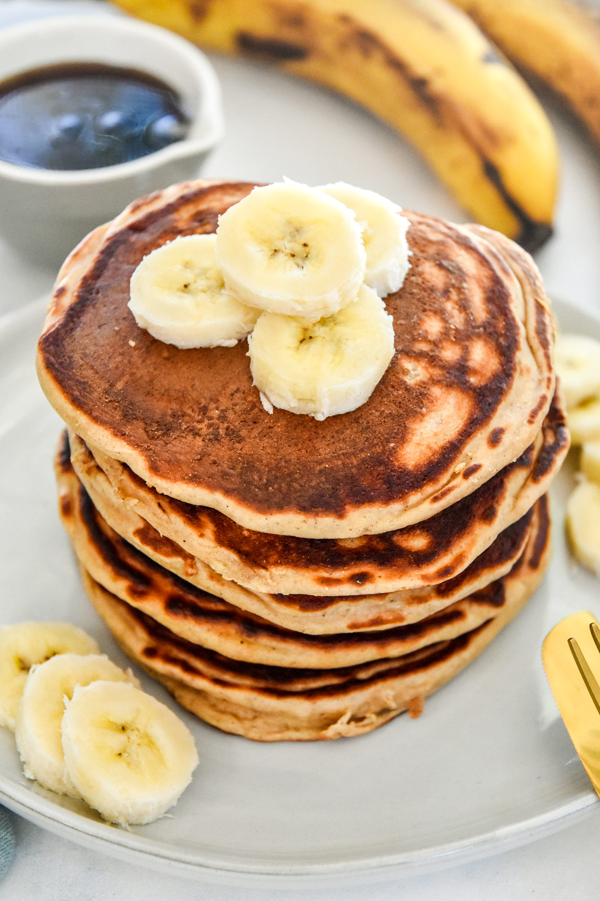

Healthy Protein Pancakes Recipe

Description:
A quick and easy protein pancakes recipe, perfect for a nutritious breakfast!
Ingredients:
- 1 cup rolled oats
- 1 scoop protein powder
- 1 ripe banana
- 2 eggs
- 1/2 cup almond milk
- 1 tsp baking powder
- 1/2 tsp cinnamon
- Fresh fruit and maple syrup for topping
Steps
- In a blender, combine the rolled oats, protein powder, banana, eggs, almond milk, baking powder, and cinnamon. Blend until smooth.
- Heat a non-stick skillet over medium heat and lightly grease it.
- Pour 1/4 cup of the batter onto the skillet for each pancake.
- Cook for 2-3 minutes on each side or until golden brown and cooked through.
- Serve the pancakes topped with fresh fruit and a drizzle of maple syrup.
Back to Recipes Page